All The Destinations!

 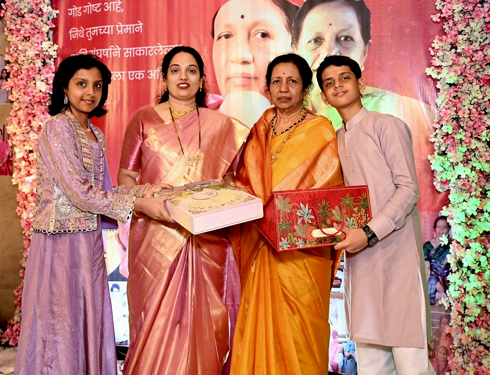
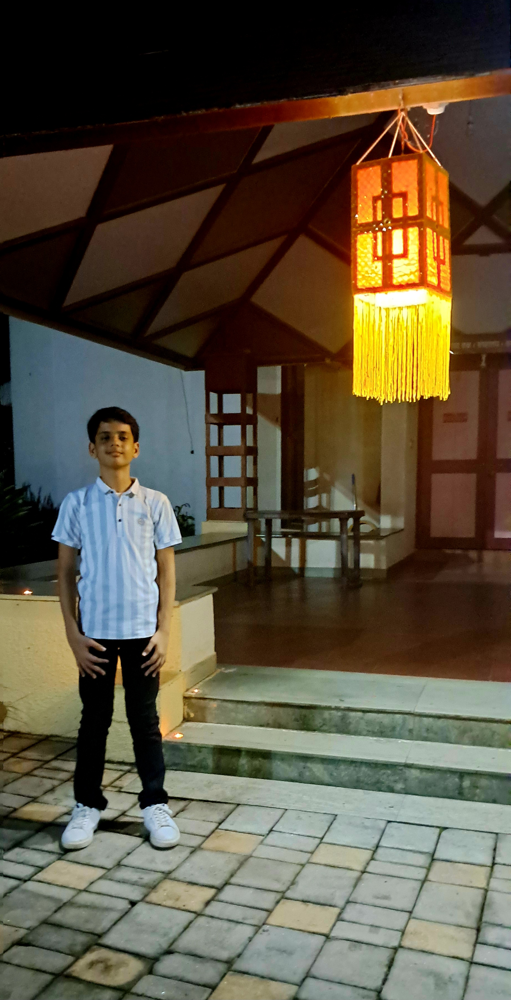
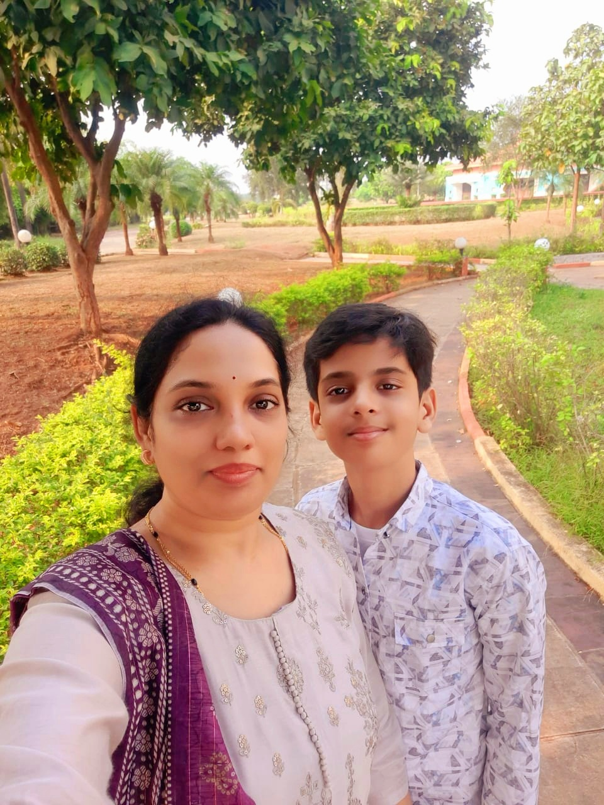
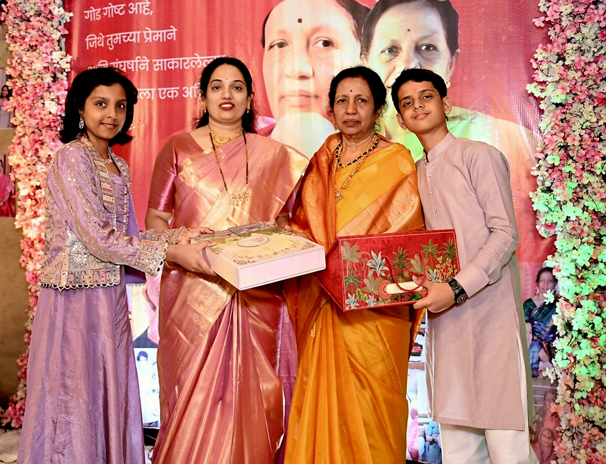
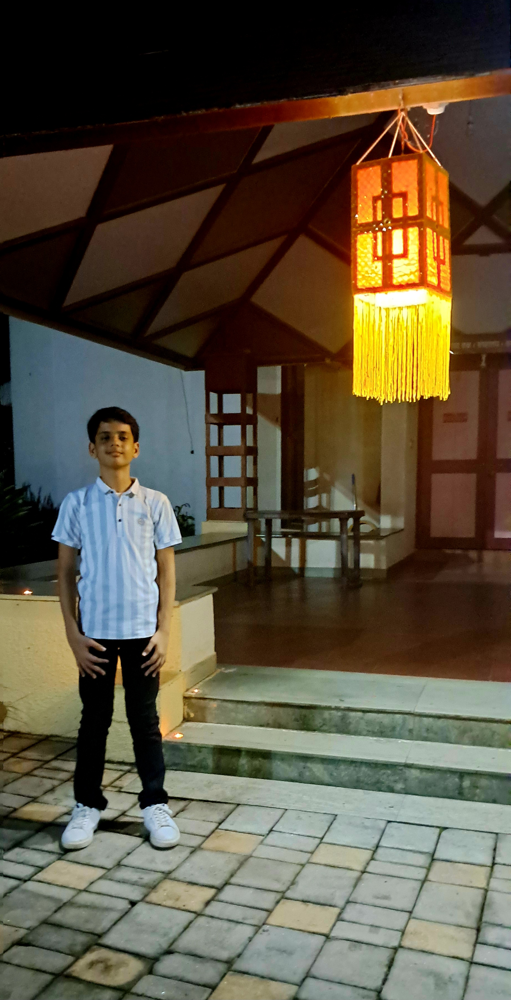
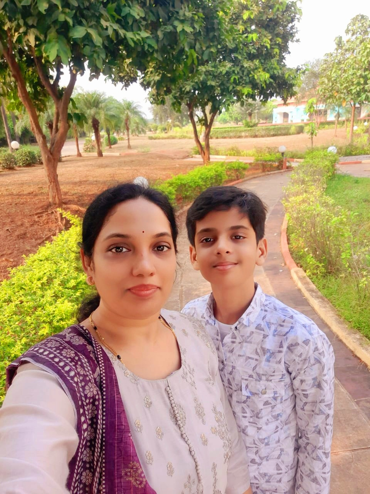
 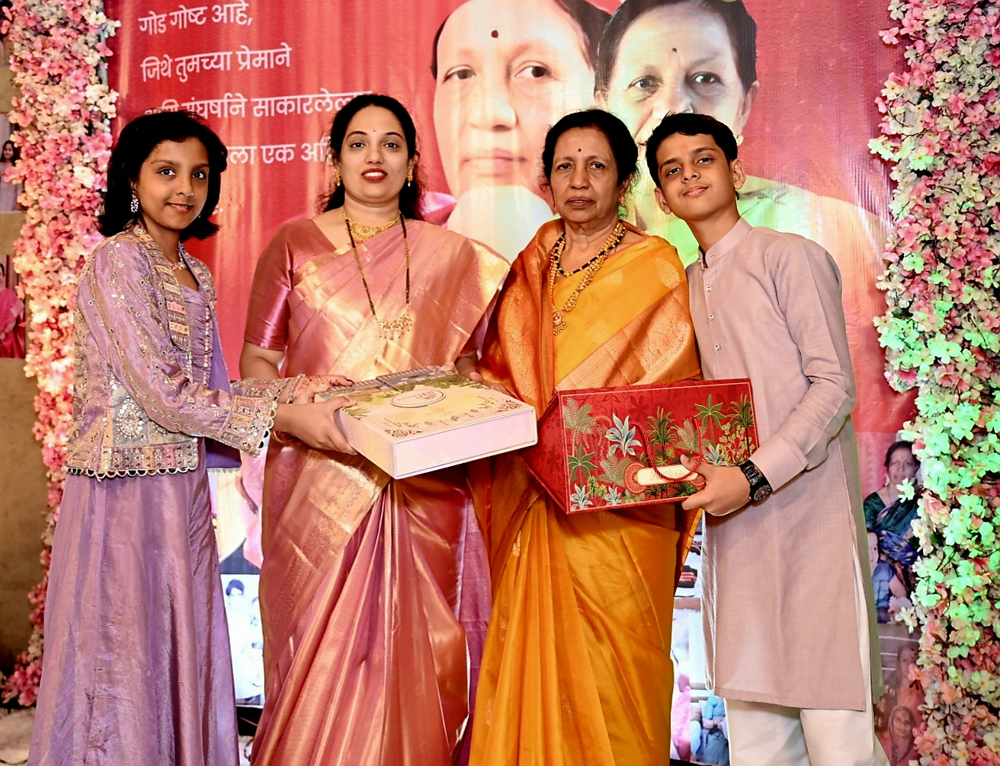
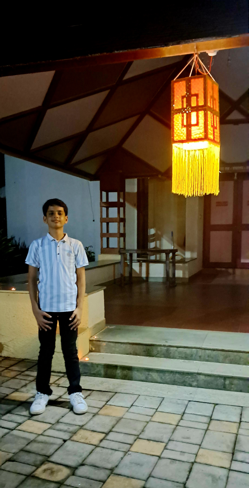
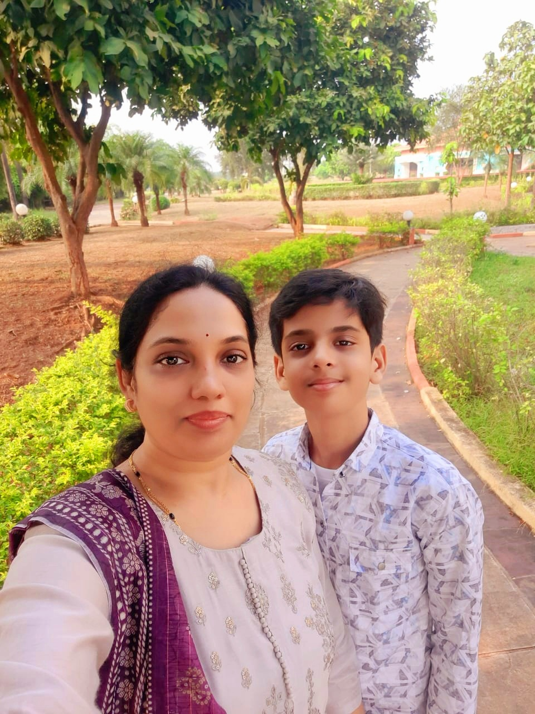
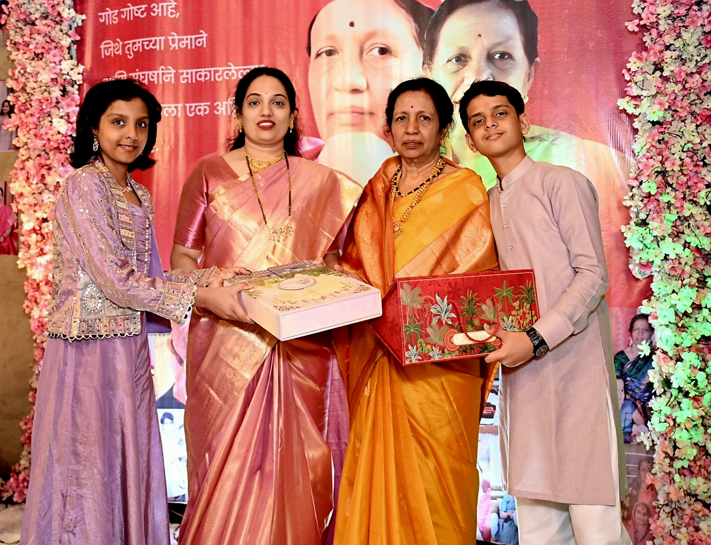
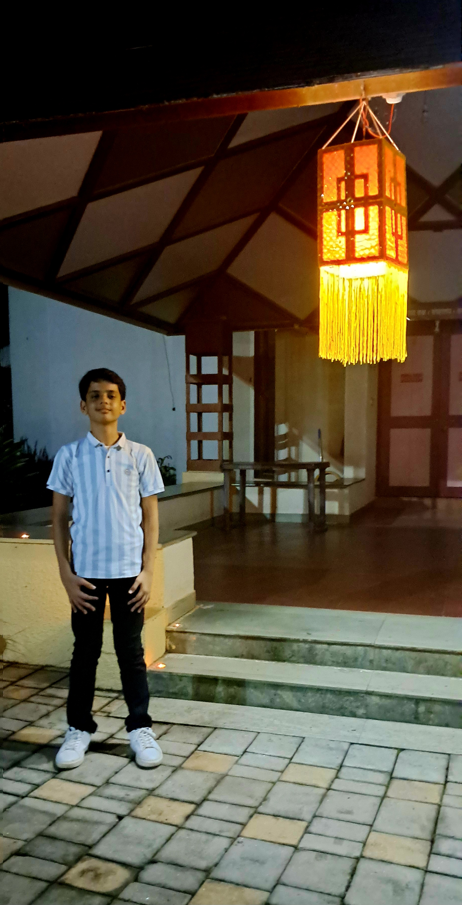
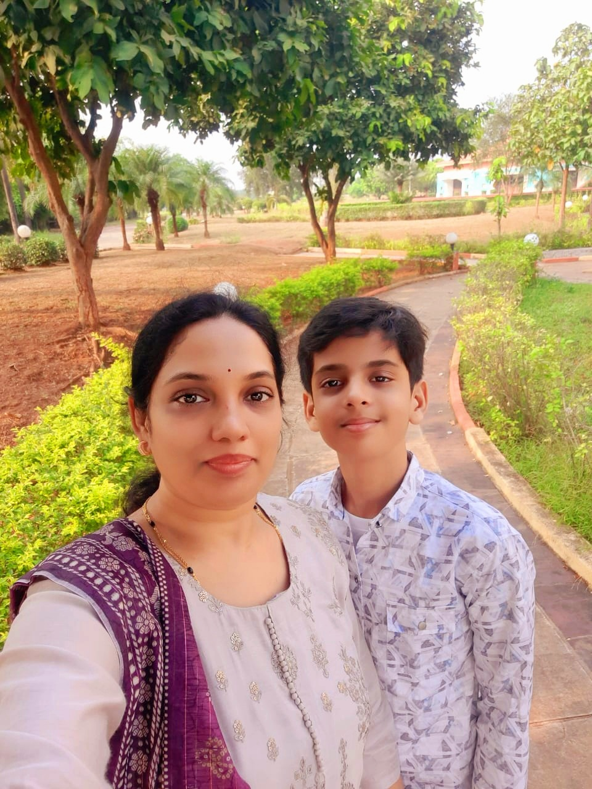
My experience was very great I enjoyed the trip very much. I went to visit my grandma for her birthday. The house felt warm – the kind of warmth you don’t schedule, it just happens when someone you care about is happy. Cakes, the familiar smell of her cooking, family chatter that reminded me to be grateful for my grandma. Seeing her smile while we gathered around was simple, but it made the day feel real. After the birthday celebration we drove to Karjat in Maharashtra. Green hills, a river , the kind of fresh air that makes you feel fresh. It felt like rewinding after.
While in Karjat I supported the Jeevanvidya Foundation (JVF) — a public charitable trust founded in 2015, registered under Charity Commissioner. They operate in fields like education, rural development, women empowerment, environment, and collaborate with corporates for social welfare.
Their campus of the larger related entity Jeevanvidya Mission is located in Karjat: Vaijnath, Tatarjat-Murbad Ro Power Road, Off Kaad, Karjat 410201.